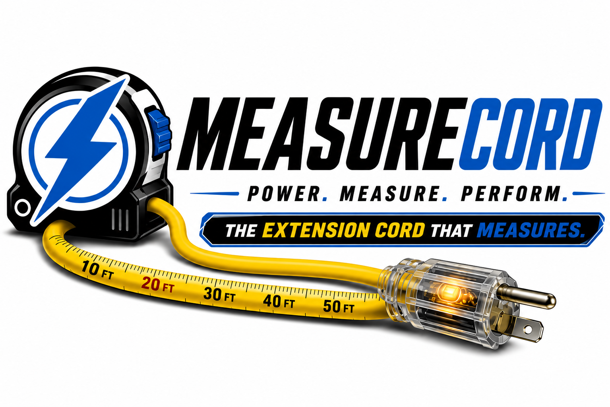
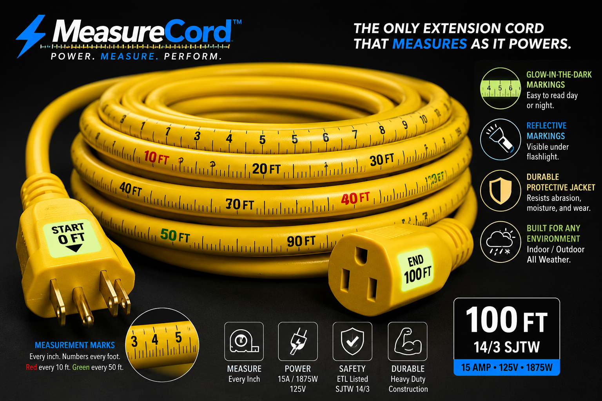
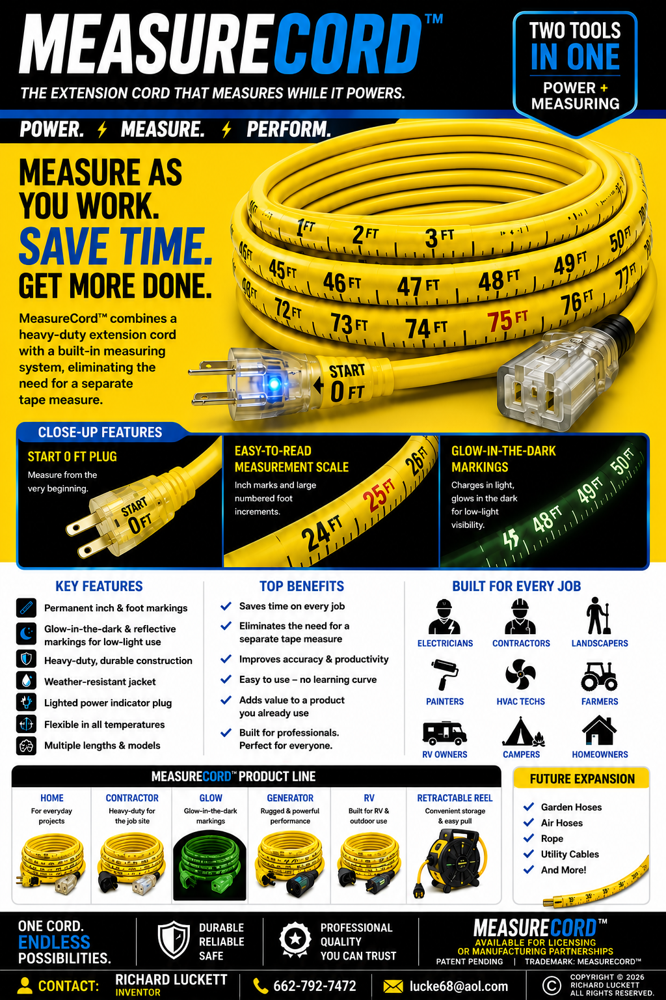

The extension cord that measures while it powers.
MeasureCord™ combines the power of a heavy-duty extension cord with an integrated measurement scale—helping you measure distances while you work without reaching for a separate tape measure.

One cord.
Two essential functions.
MeasureCord™ is designed to eliminate the need to reach for a separate tape measure when working with an extension cord. The measurement scale is integrated directly onto the cord, allowing users to estimate and measure distances while powering tools, equipment and devices.
One cord. Two essential functions.
MeasureCord™ combines a working extension cord with an integrated measurement scale printed directly onto the cord. The result is a convenient measurement reference that's available while you're powering tools, equipment and devices.
START AT ZERO
The cord begins with a clearly identified START 0 FT reference point.
READ THE SCALE
Clearly marked measurement intervals run along the cord, providing a quick distance reference while you work.
POWER YOUR JOB
Use the extension cord normally while keeping a measurement reference immediately available.
The cord becomes the measuring reference.
Traditional extension cords provide power. Tape measures provide measurement. MeasureCord™ brings these two useful functions together in one familiar product.

A familiar product
with a new function.
Extension cords are already used on construction sites, workshops, farms, homes, garages, RVs and outdoor projects. MeasureCord™ adds a useful measurement function to a product people already understand.
Measure the distance. Without putting down the cord.
MeasureCord™ integrates a measurement scale directly onto the extension cord jacket, turning the cord itself into a convenient measuring reference.
START AT ZERO
Begin at the clearly identified START 0 FT reference point near the plug.
FOLLOW THE CORD
Extend the cord toward your work area. Measurement markings run directly along the cord so the distance reference travels with it.
READ THE DISTANCE
Use the printed scale on the cord to quickly reference the distance from the starting point to the area you're working.
POWER YOUR JOB
Use MeasureCord™ like a normal extension cord while keeping a measurement reference immediately available.
What makes MeasureCord™ different?
A conventional extension cord delivers power. A tape measure provides measurement. MeasureCord™ combines both functions in one familiar product.
Designed around convenience.
INTEGRATED MEASUREMENT
Measurement markings are incorporated directly into the cord.
POWER + MEASURE
Two useful functions combined into one familiar product.
LOW-LIGHT VISIBILITY
Future versions may incorporate glow-in-the-dark or reflective measurement markings.
DURABLE DESIGN
Intended for demanding household and professional environments.
HOME APPLICATIONS
Useful for homeowners, DIY projects, garages and workshops.
PROFESSIONAL APPLICATIONS
Potential applications include contractors, electricians, landscapers, painters and HVAC professionals.
MeasureCord™ Product Overview
Product concept and potential applications are presented in the following inventor sell sheet.

More than one cord.
MeasureCord™ is envisioned as a product platform with multiple potential versions and applications.
HOME
Everyday projects, garages, workshops and DIY use.
CONTRACTOR
Heavy-duty applications for professional job sites.
GLOW
Enhanced visibility for low-light environments.
GENERATOR
Potential version designed around generator applications.
RV
Potential applications for RV and outdoor users.
RETRACTABLE REEL
Future reel-based MeasureCord™ configuration.
A familiar product.
With a new function built in.
MeasureCord™ combines two everyday tools—a heavy-duty extension cord and a measurement reference—into one product. The integrated measurement scale is incorporated directly onto the cord jacket, allowing users to reference distance while the cord is being used for power.
THE INVENTION
An extension cord with an integrated measurement scale. Instead of carrying a separate tape measure for quick distance references, the cord itself becomes the measuring reference.
THE CONSUMER PROBLEM
Extension cords are already used across garages, workshops, construction sites, homes and outdoor projects. When users need to estimate or reference distance, they often have to stop working and reach for another tool.
THE DIFFERENCE
MeasureCord™ puts the measurement reference directly where the work is happening. Power and measurement are available from the same familiar product.
DESIGNED FOR A FAMILIAR PRODUCT FORMAT
The concept is built around an established extension-cord format rather than requiring consumers to learn an entirely new tool. The primary product innovation is the integrated measurement marking system.
Add a useful new function to a product consumers already understand.
MeasureCord™ is intended as a practical product innovation: incorporate a durable measurement scale into the cord jacket while retaining the familiar purpose and basic user experience of an extension cord.
This creates an opportunity for an established manufacturer to evaluate the concept using existing extension-cord manufacturing, sourcing, packaging and distribution capabilities, subject to engineering, safety, regulatory and manufacturing validation.
More than one cord.
MeasureCord™ can be positioned as a product family rather than a single SKU, with different cord configurations serving different consumers and applications.
HOME
Everyday projects, garages, workshops and household use.
CONTRACTOR
Heavy-duty applications for construction, maintenance and professional users.
GLOW
Enhanced visibility and measurement readability for lower-light working environments.
GENERATOR
Potential configuration for generator and emergency power applications.
RV
Potential configuration for RV, campsite and outdoor power applications.
FUTURE FORMATS
Potential reel-based, specialty-length and application- specific configurations.
EXISTING CONSUMER CATEGORY
The concept enters a category consumers already understand: extension cords and power accessories.
SIMPLE VALUE PROPOSITION
One product provides power while also providing a convenient measurement reference.
ROOM FOR PRODUCT EXTENSION
Multiple lengths, gauges, cord formats and specialized applications could create additional SKUs.
LICENSING POTENTIAL
An established partner could bring engineering, compliance, manufacturing, distribution and retail expertise to the concept.
POWER. MEASURE. PERFORM.
I am seeking an established licensing, manufacturing or strategic commercialization partner interested in evaluating MeasureCord™ and exploring its potential as a new product platform.
If your company manufactures or distributes extension cords, power accessories, tools, hardware or home-improvement products, let's discuss the opportunity.
DISCUSS LICENSINGInterested in MeasureCord™?
For licensing, manufacturing, distribution, retail or partnership inquiries, contact the inventor.
Richard Luckett
Inventor — MeasureCord™
Licensing • Manufacturing • Distribution • Retail Partnerships